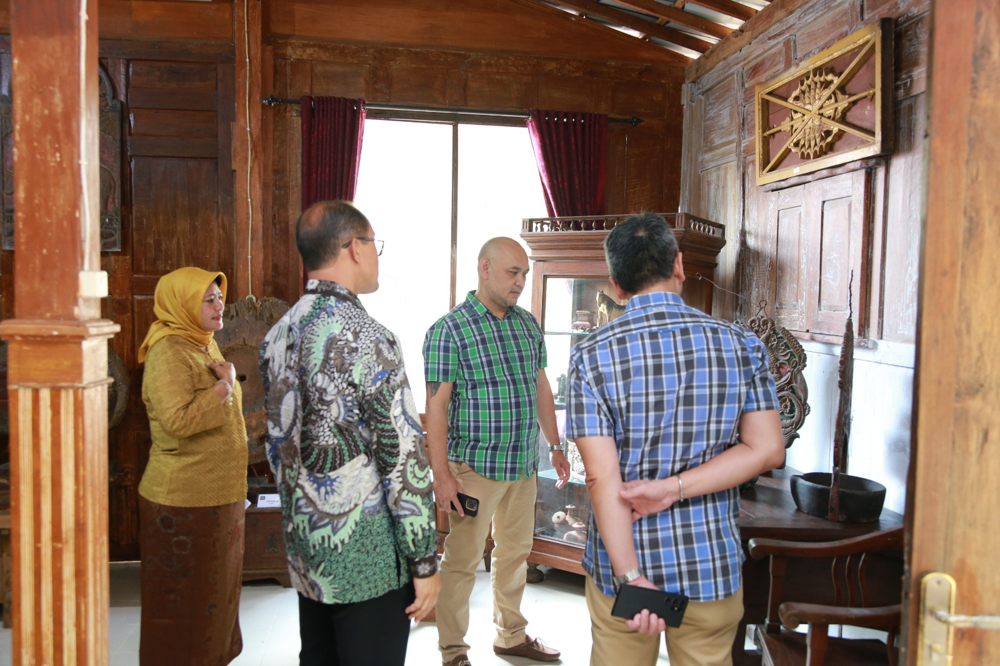
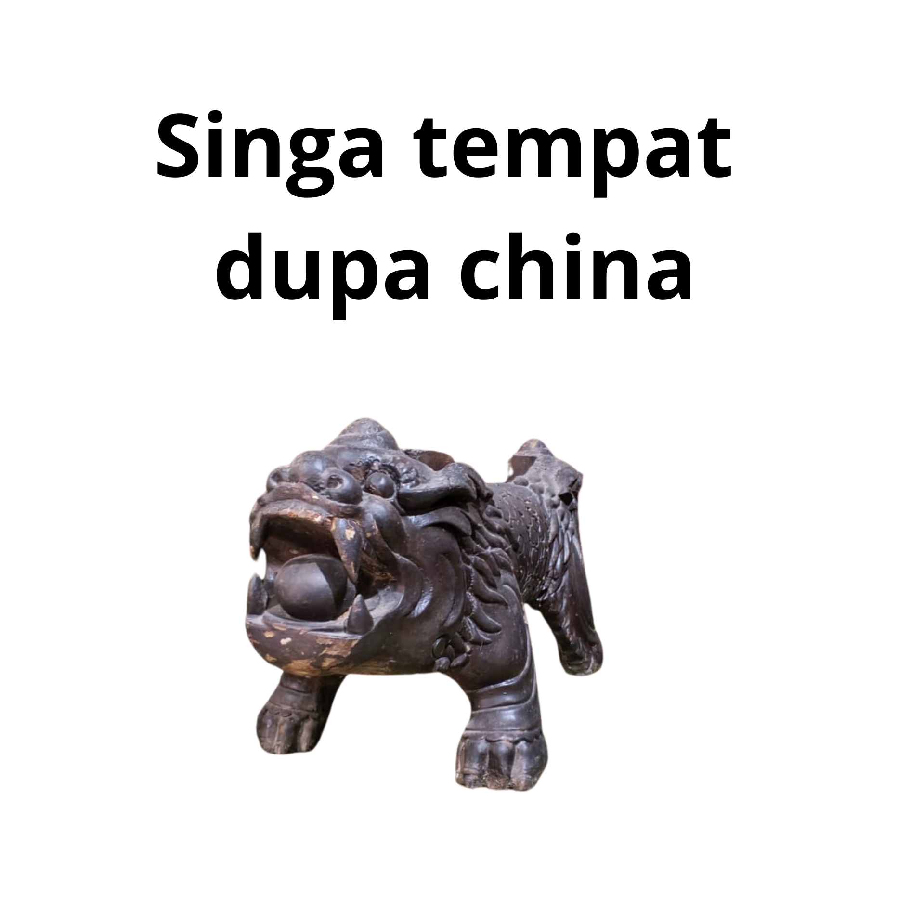
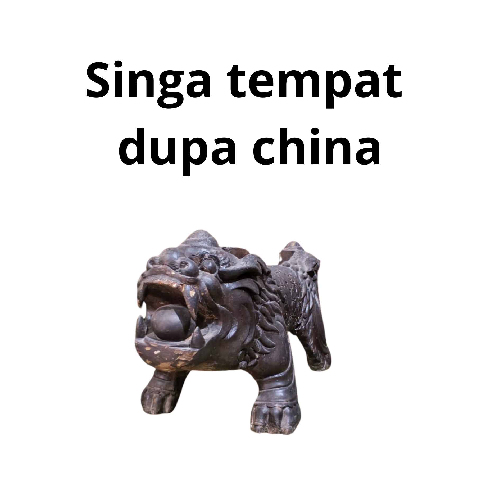

Sejarah Singkat
Asal-usul dan Perkembangan Museum
Museum Kayu dan Kriya "Ambar Polah" telah mengawali cita-cita berdiri sebagai museum sejak tahun 1986 dari alm. Bapak Ambar Polah Tjahyono dan ibu Mursupriyani. Semula museum ini adalah salah satu rumah koleksi sebelum ditempatkan menjadi museum kayu dan kriya di Kabupaten Kulonprogo, pada tahun 2025.
Sebagai kolektor, Bapak Ambar Polah bersama Ibu Mursupriyani, memiliki keinginan menjaga ragam koleksi benda "Javanese Antique Furniture" yang diperoleh melalui proses pengkoleksian yang sangat panjang. Penantian serta keinginan alm. Bapak Ambar Polah Tjahyono untuk menempatkan koleksinya sebagai museum pribadi bagi masyarakat, pada akhirnya dapat diwujudkan oleh Ibu Mursupriyani, melalui proses kurasi benda koleksi.
Pokok Sejarah dalam Sorotan
Awal Cita-Cita (1986)
Gagasan pendirian museum pertama kali tumbuh pada tahun 1986 melalui alm. Bapak Ambar Polah Tjahyono dan Ibu Mursupriyani, yang memiliki kecintaan mendalam terhadap seni dan kriya kayu Jawa.
Rumah Koleksi Pribadi
Sebelum menjadi museum, seluruh benda koleksi disimpan di rumah koleksi keluarga, sebagai upaya awal pelestarian warisan budaya berupa Javanese Antique Furniture.
Koleksi yang Dihimpun Bertahun-tahun
Sebagai kolektor, Bapak Ambar Polah mengumpulkan beragam furnitur kayu Jawa antik melalui proses yang panjang, teliti, dan penuh dedikasi.
Terwujudnya Museum (2025)
Keinginan almarhum untuk menjadikan koleksi tersebut sebagai museum bagi masyarakat akhirnya diwujudkan oleh Ibu Mursupriyani pada tahun 2025, melalui proses kurasi dan penataan koleksi yang terstruktur.
Timeline Perkembangan
Alm. Bapak Ambar Polah Tjahyono dan Ibu Mursupriyani mulai memiliki cita-cita mendirikan museum koleksi kayu dan kriya Jawa.
Bapak Ambar Polah menghimpun ragam Javanese Antique Furniture melalui proses panjang, teliti, dan penuh dedikasi.
Ibu Mursupriyani memulai proses kurasi koleksi setelah wafatnya Bapak Ambar Polah.
Museum Kayu & Kriya resmi diwujudkan sebagai museum pribadi terbuka untuk publik.
Galeri Foto


 
